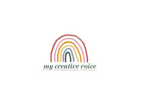

Trade Mark Journal No.2025/013 28 March 2025
UK00004173386 13 March 2025 (41,42,44)

- Class 41
- Education services relating to meditation; Educational and instruction services relating to arts and crafts; Teaching of meditation practices; Arranging of workshops and seminars; Conducting courses, seminars and workshops; Arranging of workshops; Arranging and conducting of workshops and seminars; Conducting workshops and seminars in art appreciation; Conducting of workshops and seminars in art appreciation; Conducting workshops [training]; Workshops for training purposes; Workshops (Arranging and conducting of -) [training]; Workshops for educational purposes; Organising of educational seminars; Organisation of seminars and conferences; Arranging and conducting workshops; Arranging professional workshop and training courses; Organising of education seminars; Educational seminars; Arranging, conducting and organisation of workshops; Conducting training seminars; Conducting seminars; Conducting of seminars and congresses; Organisation of training seminars; Organisation of seminars; Arranging of seminars; Workshops for recreational purposes; Conducting training seminars for clients; Organisation of educational seminars; Organisation of conferences, exhibitions and competitions; Organising of educational lectures; Arranging and conducting of conferences, congresses and symposiums; Organising of educational conferences; Providing online training seminars; Organisation of seminars relating to training; Organization of seminars; Organising of education conferences; Conducting of educational conferences; Arranging of seminars relating to training; Organising of educational exhibitions; Organisation of continuing educational seminars; Organising of education exhibitions; Seminars (Arranging and conducting of -); Arranging and conducting seminars; Arranging, conducting and organisation of seminars; Organisation of meetings and conferences; Consultancy and information services relating to arranging, conducting and organisation of workshops; Organising of conferences for educational purposes; Planning of seminars for educational purposes; Arranging of educational conferences; Production of course material distributed at vocational seminars; Arrangement of training courses in teaching institutes; Arranging of demonstrations for training purposes; Conducting of classes; Organisation of seminars relating to education; Organisation of conferences relating to vocational training; Arranging of seminars relating to education; Arranging and conducting of lectures for training purposes; Conducting of educational courses; Arranging of training courses; Organising of exhibitions for educational purposes; Arranging, conducting and organization of seminars; Organisation of Webinars; Training courses; Organisation of conferences relating to training; Organising of meetings in the field of education; Organisation of training courses; Conducting of instructional, educational and training courses for young people and adults; Arrangement of seminars for educational purposes; Organising of conferences relating to education; Production of course material distributed at professional seminars; Symposiums (Arranging and conducting of -); Arranging and conducting of educational courses; Arranging of lectures; Written training courses; Conducting of exhibitions for educational purposes; Arranging of conferences; Training consultancy; Educational consultancy; Educational consultancy services; Consultancy services relating to training; Education and training consultancy; Teaching services; Educational and teaching services; Health and wellness training; Publishing of books; Publication of books; Books (Publication of -); Publication of electronic books and periodicals on the Internet; Publication of journals; Publishing of journals; Publication of books, magazines, almanacs and journals; Creation [writing] of educational content for podcasts; Publication of multimedia material online; Provision of online information relating to audio and visual media; Providing online images, not downloadable; Publishing of educational material; Providing online videos, not downloadable; Dissemination of educational material; Providing online publications, not downloadable; Production of podcasts; Creation [writing] of podcasts; Teaching; Educating at university or colleges; Education, teaching and training; University education services; Arranging and conducting of lectures; Organisation of conferences relating to education; University services; Arranging teaching programmes; Education services relating to therapeutic treatments; Training and instruction; Education information services; Educational information services; Information services relating to education; Training and education services; Education and training services.
- Class 42
- Hosting of digital content; Hosting of multimedia content for others; Hosting of digital content online; Hosting of digital content, namely, on-line journals and blogs; Hosting online web facilities for others for sharing online content.
- Class 44
- Art therapy; Music therapy; Dance therapy; Music therapy services; Therapy services; Music therapy for physical, psychological and cognitive purposes; Psychological therapy for infants; Psychotherapy; Health care relating to relaxation therapy; Therapeutic treatment of the body; Holistic psychotherapy; Psychotherapy services; Psychological counseling; Psychological counselling; Psychological consultation; Psychological treatment; Mental health services; Health care; Psychological care; Meditation services; Reiki services; Psychiatric services; Psychological assessment services; Providing psychological treatment.
Zahra Akthar